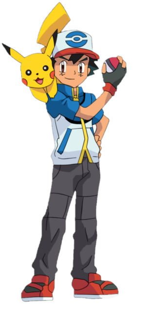

Ash Ketchum
A Pokémon Trainer from Pallet Town destine to become a Pokémon Master!

Ash in his Black & White series outfit with his orginal Pikachu
Pokémon.
A short summay of Ash's journeys:
Pokémon the Series: The Beginning
Kanto
- Ash begins his journey as a Pokémon trainer
- Ash finishes in the top 16 in the Indigo Plateau Conference
Orange Islands
- Ash travels to the Orange Archipelago
- Ash has his first-ever battle against Gary and loses
Pokémon the Series: Gold & Silver
Johto
- Ash signs up for the Johto League
- Ash finishes in the top 8 in the Silver Conference
Pokémon the Series: Ruby and Sapphire
Hoenn
- Ash meets May and they decide to travel together
- Ash finishes in the top 8 in the Ever Grande Conference
Kanto (Battle Frontier)
- Ash is revealed to be capable of using Aura
- Ash earns the Brave Symbol and enters the Battle Frontier Hall of Fame.
Pokémon the Series: Diamond and Pearl
Sinnoh
- Ash meets Paul, his newest rival
- Ash eventually defeats Paul in a a traditional Pokémon battle.
Pokémon the Series: Black & White
Unova
- Ash meets a mysterious girl named Iris and her Axew
- Ash, Iris, and Cilan encounter the villainous Team Plasma for the first time.
Decolore Islands
- Ash, Iris, and Cilan arrive in the Decolore Islands
- Ash takes part in and wins the Scalchop King Competition
Pokémon the Series: XY
Kalos
- Mega evolution is introduced
- Ash and his friends enter the Lumiose Conference, Ash finishes in 2nd place
Pokémon the Series: Sun & Moon
Alola
- Ash, Delia, and Mimey travel to the Alola region.
- Ultra beasts are introduced
Pokémon Journeys: The Series (Sword and Shield)
Kanto
- Ash's Pikachu is revealed to be able to Gigantamax.
- Ash battles Iris in a World Coronation Series match and wins, bringing his rank to 99 and advancing him to the Ultra Class
For more information about Ash check out his
Blubapedia page